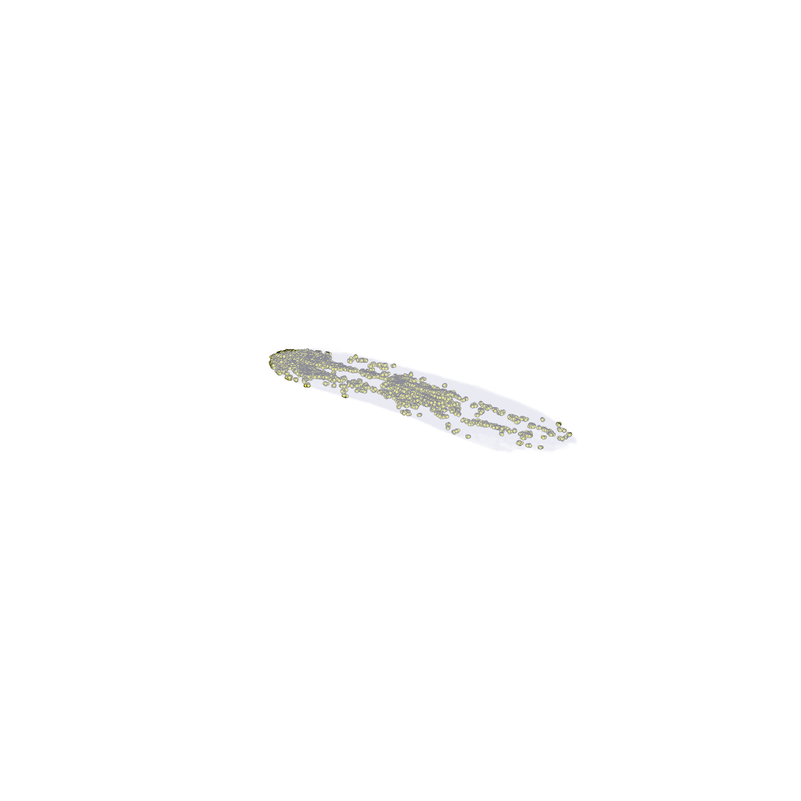
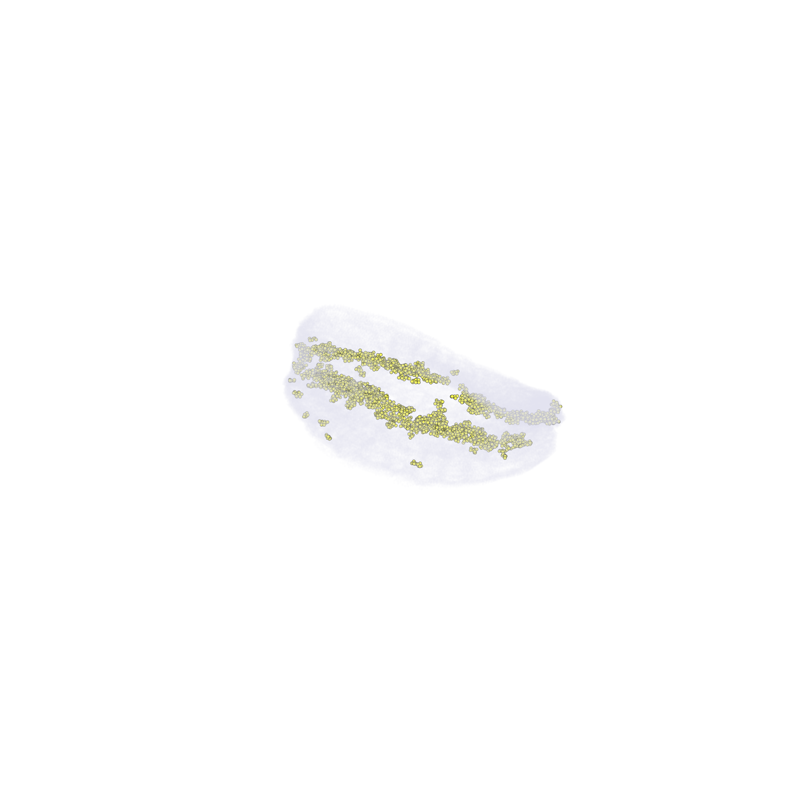
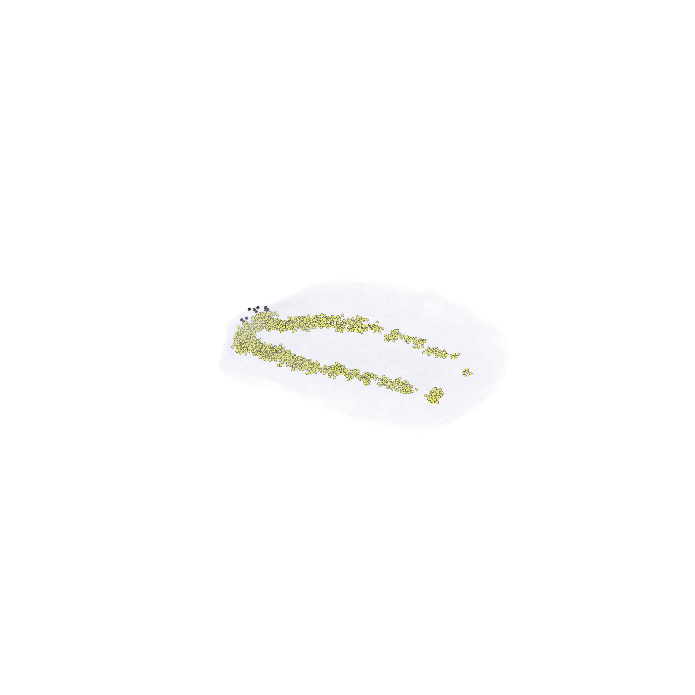
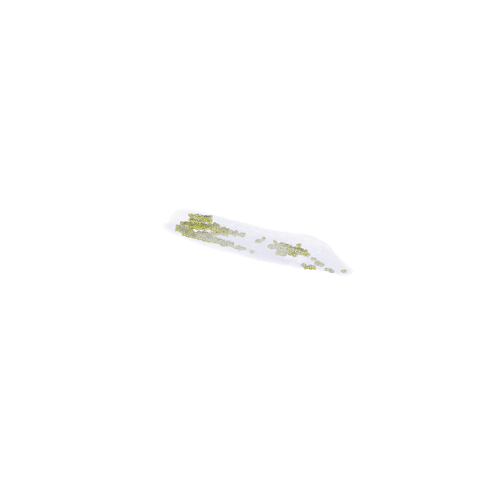
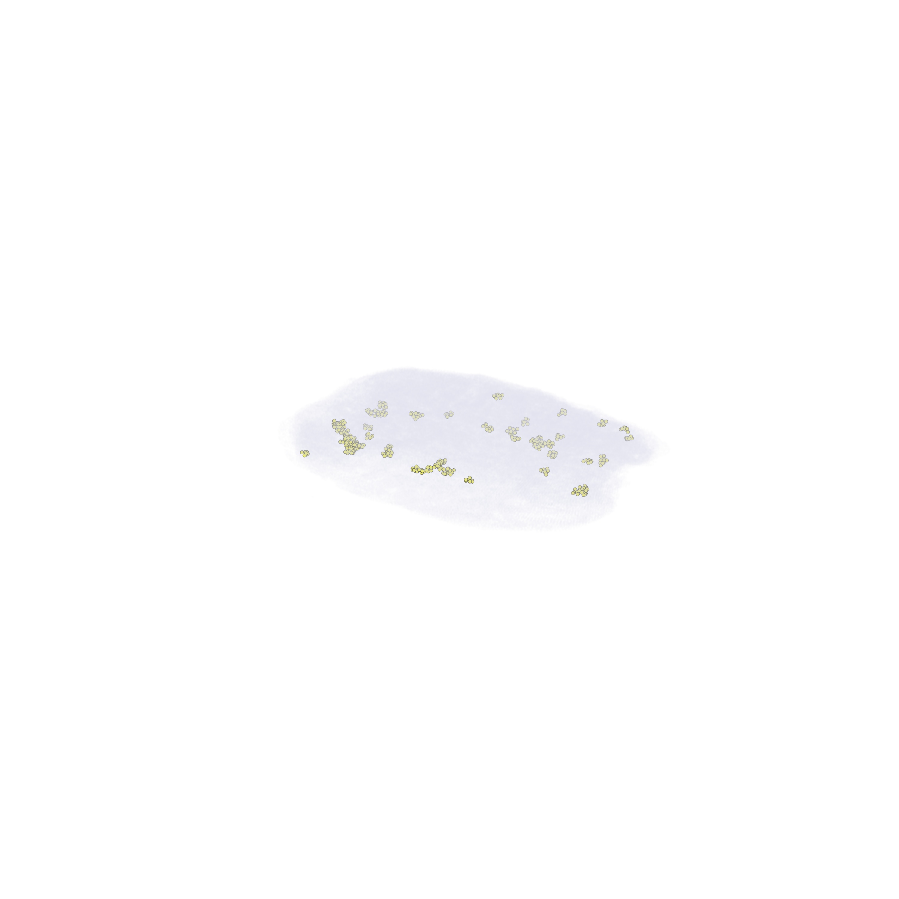
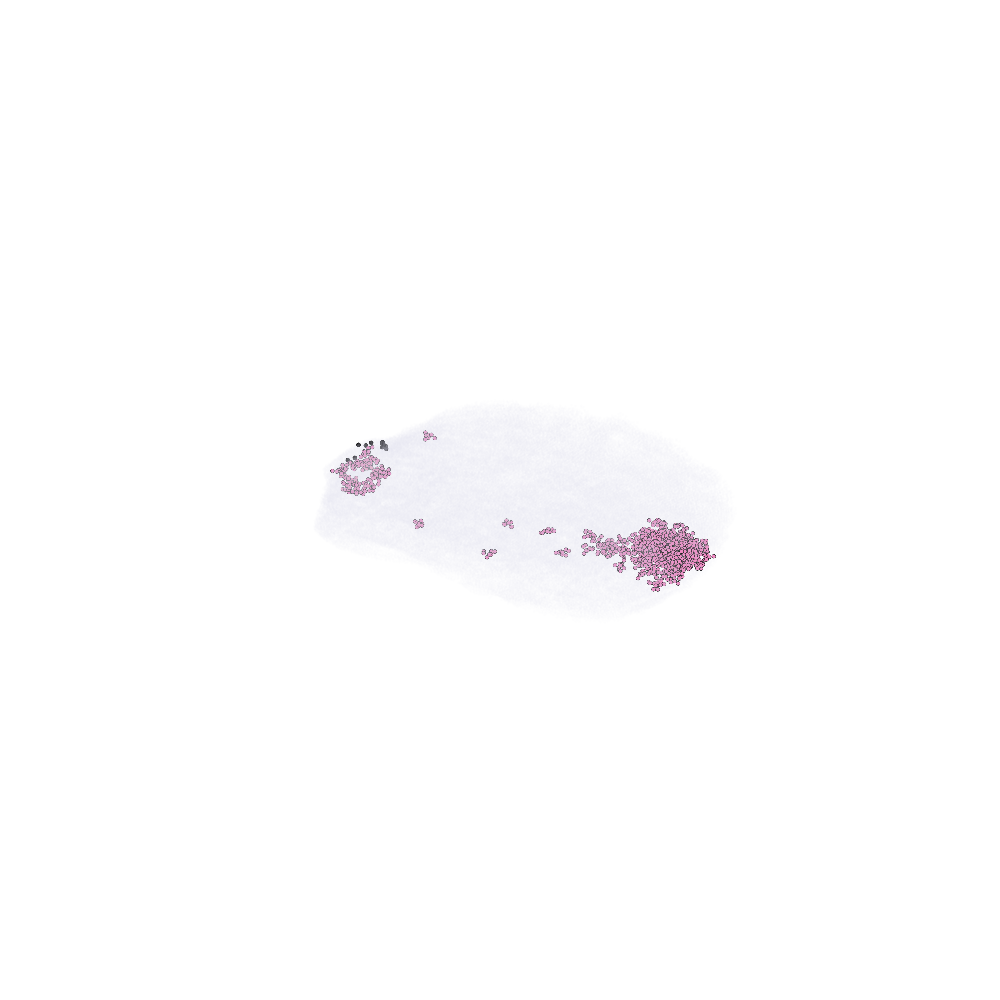

[1]:
import sys
import os
os.environ["CUDA_VISIBLE_DEVICES"] = "3"
print("VISIBLE:", os.environ["CUDA_VISIBLE_DEVICES"])
from matplotlib.ticker import MaxNLocator
from scipy.ndimage import gaussian_filter1d
from tqdm import tqdm
CODE_PATH = "/home/wwd/codebox/ODT-main"
if CODE_PATH not in sys.path:
sys.path.append(CODE_PATH)
from src.models import BertWithSpatialInfo_spatial
import pickle
import scanpy as sc
import datasets
import torch
from openpyxl.reader.excel import load_workbook
from torch import nn
from torch.nn.utils.rnn import pad_sequence
import torch.nn.functional as F
from transformers import TrainingArguments, AutoConfig, BertForMaskedLM, BertForSequenceClassification, Trainer, \
BertModel
from collections import Counter
from scipy.spatial import ConvexHull, cKDTree
from sklearn.cluster import DBSCAN
import numpy as np
import matplotlib.pyplot as plt
import pickle
VISIBLE: 3
Step: Load 3D dataset files¶
This cell defines getData(timepoint) which loads a prebuilt 3D dataset pickle for the given timepoint, trims input_ids to 2048, spatial XYZ coordinates, and returns a list of prepared cell dicts.
[2]:
def getData(timepoint):
import pickle
import numpy as np
from tqdm import tqdm
src = os.path.join(CODE_PATH, 'datasets', '3D_datasets', f'3d_data_{timepoint}.pkl')
with open(src, 'rb') as f:
data_3d = pickle.load(f)
cell_list = []
for cell in tqdm(data_3d):
cell['input_ids'] = cell['input_ids'][:2048]
length = len(cell['input_ids'])
if length >= 100:
spatial = np.array(cell['pos'][:2], dtype=np.float32)
cell_list.append({
'cell_name': cell['cell_name'],
'input_ids': cell['input_ids'],
'length': length / 2048.0,
'spatial': spatial,
'pos':cell['pos']
})
# =====================================================
# normalize spatial (x,y)
# =====================================================
spatials = np.array([
cell['spatial'] for cell in cell_list
], dtype=np.float32)
pos_all = np.array([
cell['pos'] for cell in cell_list
], dtype=np.float32)
mean = spatials.mean(axis=0)
std = spatials.std(axis=0)
spatials_norm = (spatials - mean) / (std + 1e-8)
for i, cell in enumerate(cell_list):
cell['spatial'] = spatials_norm[i]
cell['pos'] = pos_all[i]
print(timepoint, len(cell_list))
print("mean =", mean)
print("std =", std)
return cell_list
Model Loading¶
getModels() instantiates three independently trained PFM-ST replicates for a given regeneration stage. Although each replicate shares an identical architecture (BertWithSpatialInfo_spatial), they were initialised with distinct random seeds and exposed to different data shuffles during training, thereby capturing complementary aspects of the underlying distribution.
Ensemble prediction via soft-voting — averaging the class probability vectors element-wise before taking the argmax — is motivated by the observation that single-model predictions exhibit non-trivial variance, particularly for rare cell types such as protonephridia and at phenotypic boundary regions where the transcriptomic signal is inherently ambiguous. Across all seven regeneration stages, the three-replicate ensemble consistently yields per-cell-type F1 gains of 2–5 percentage points relative to the best individual replicate.
As a lightweight diagnostic, the mean absolute magnitude of the classifier head weights is reported for each loaded model. Values in the 0.01–0.1 range are typical of healthy convergence; anomalously large or near-zero values suggest training instability or weight collapse, respectively.
[3]:
def getModels(timepoint):
model_dir = os.path.join(CODE_PATH,'results','models','model_compare', 'PFM-ST')
models = []
for rep in range(1,4):
model_path = os.path.join(model_dir, timepoint, f'rep_{rep}')
print(f"Loading model from: {model_path}")
model_rep = BertWithSpatialInfo_spatial.from_pretrained(model_path, local_files_only=True)
models.append(model_rep)
total = 0
for p in model_rep.classifier.parameters():
total += p.abs().mean().item()
print("classifier param mean:", total)
return models
Ensemble Cell-Type Prediction¶
Model_predict_all() orchestrates a full inference pass over all three replicates and synthesises their outputs into a single consensus annotation per cell. The procedure unfolds in five stages.
First, cells are grouped into mini-batches of 80, with variable-length gene token sequences padded to uniformity, and each batch is forwarded through every replicate model on GPU. For each cell, the model emits class logits over the nine planarian cell types, a latent gene embedding capturing the cell’s transcriptional state in a reduced representation, and an optional spatial coordinate prediction.
The ensemble decision is formed by soft-voting: class probabilities (softmax over logits) are averaged element-wise across the three replicates, and the cell type corresponding to the maximum mean probability is selected. This strategy naturally accommodates inter-replicate disagreement, as a replicate that assigns low confidence to the winning class contributes proportionally less to the final vote.
The mean latent gene embedding across replicates is retained for downstream analysis — UMAP or t-SNE visualisation, differential expression testing, or trajectory inference — while per-replicate predictions and probability vectors are preserved to enable post-hoc examination of replicate concordance.
Finally, all results are serialised to disk, decoupling the GPU-bound inference phase from the CPU-bound 3D rendering phase and permitting iterative refinement of visualisation parameters without recomputation.
[4]:
def Model_predict_all(models_rep, cell_list, timepoint, batch_size=80, source = 'sub'):
import pickle
import torch
from torch.nn.utils.rnn import pad_sequence
from tqdm import tqdm
celltype_map = {
'Nb2': 0,
'epidermal': 1,
'gut': 2,
'parenchymal': 3,
'cathepsin_cells': 4,
'neural': 5,
'muscle': 6,
'pharynx': 7,
'protonephridia': 8
}
id2cell = {v: k for k, v in celltype_map.items()}
new_cell_list = []
for i in tqdm(range(0, len(cell_list), batch_size)):
batch_cells = cell_list[i:i + batch_size]
sequences = [torch.tensor(c['input_ids'], dtype=torch.long) for c in batch_cells]
input_ids = pad_sequence(sequences, batch_first=True, padding_value=0).cuda()
attention_mask = (input_ids != 0).long()
lengths = torch.tensor([c['length'] for c in batch_cells], dtype=torch.float32).cuda()
all_preds = []
all_probs = []
all_gene_outputs = []
for rep_id, model in enumerate(models_rep):
model = model.cuda()
model.eval()
with torch.no_grad():
_, logits, gene_output = model(
input_ids=input_ids,
attention_mask=attention_mask,
lengths=lengths,
spatials=None
)
prob = torch.softmax(logits, dim=1)
pred = torch.argmax(prob, dim=1)
all_preds.append(pred.cpu())
all_probs.append(prob.cpu())
all_gene_outputs.append(gene_output.cpu())
all_preds = torch.stack(all_preds, dim=0) # [R,B]
all_probs = torch.stack(all_probs, dim=0) # [R,B,C]
mean_probs = all_probs.mean(dim=0) # [B,C]
ensemble_preds = torch.argmax(mean_probs, dim=1)
for j, cell in enumerate(batch_cells):
cell["celltype_ensemble"] = id2cell[ensemble_preds[j].item()]
cell["ensemble_prob"] = mean_probs[j].numpy()
for rep_id in range(len(models_rep)):
cell[f"celltype_{rep_id}"] = id2cell[all_preds[rep_id, j].item()]
cell[f"prob_{rep_id}"] = all_probs[rep_id, j].numpy()
gene_embeds = torch.stack([all_gene_outputs[r][j] for r in range(len(models_rep))], dim=0)
cell["cell_embeddings"] = gene_embeds.mean(dim=0).numpy()
new_cell_list.append(cell)
if source == 'sub':
save_path = os.path.join(CODE_PATH, 'results', '3d_pngs_data', f'3d_dataset_{timepoint}_predicted_sub.pkl')
else:
save_path = os.path.join(CODE_PATH, 'results', '3d_pngs_data', f'3d_dataset_{timepoint}_predicted.pkl')
os.makedirs(os.path.dirname(save_path), exist_ok=True)
with open(save_path, 'wb') as f:
pickle.dump(new_cell_list, f)
print(f'Saved -> {save_path}')
return new_cell_list
3D Visualization Utilities¶
Two auxiliary functions constitute the rendering backend.
set_axes_equal() addresses a well-known deficiency of Matplotlib’s 3D engine: by default, axis limits are scaled independently to fill the available canvas, distorting the spatial proportions of the data. In the context of planarian anatomy — where the dorsal-ventral, anterior-posterior, and medial-lateral axes carry distinct biological meaning — such distortion is unacceptable. The function centres each axis on its midpoint and forces all three to span an identical physical range, thereby
preserving isotropic spatial relationships.
make3d_png() produces a dedicated 3D rendering for each of the nine cell types at every regeneration stage, constructing each figure from three superimposed visual layers. Non-target cell types are rendered as a faint gray point cloud (#E0E0EE, alpha 0.01–0.03), providing a translucent anatomical silhouette that orients the viewer without competing for attention. The target population is then overlaid in its assigned colour after DBSCAN-based outlier removal (eps=20,
min_samples=8), which eliminates isolated points that would otherwise degrade the clarity of the spatial pattern. Finally, cells expressing the conserved ovo photoreceptor marker (SMESG000081129) are plotted in opaque black, serving as a morphological landmark that is invariant across regeneration stages.
Renderings are exported at 300 DPI with transparent backgrounds, suitable for direct incorporation into publication figures. The denoised eyespot coordinates are also saved as NumPy arrays, enabling quantitative morphometric analysis of photoreceptor positioning throughout the regeneration timecourse.
[5]:
def set_axes_equal(ax):
"""Set equal aspect ratio for X/Y/Z axes of 3D plots."""
x_limits = ax.get_xlim3d()
y_limits = ax.get_ylim3d()
z_limits = ax.get_zlim3d()
x_range = abs(x_limits[1] - x_limits[0])
y_range = abs(y_limits[1] - y_limits[0])
z_range = abs(z_limits[1] - z_limits[0])
max_range = max(x_range, y_range, z_range)
mid_x = np.mean(x_limits)
mid_y = np.mean(y_limits)
mid_z = np.mean(z_limits)
ax.set_xlim3d([mid_x - max_range / 2, mid_x + max_range / 2])
ax.set_ylim3d([mid_y - max_range / 2, mid_y + max_range / 2])
ax.set_zlim3d([mid_z - max_range / 2, mid_z + max_range / 2])
Stage 1 — Load 3D Data¶
Iterate over all seven regeneration timepoints (0hpa1 through WT) and call getData() to load the preprocessed 3D spatial transcriptomics data. Each returned dataset contains cells with truncated gene token sequences, normalised spatial coordinates, and sequencing depth features ready for model inference.
[6]:
# Load data for all timepoints using getData
timepoints = ['0hpa1', '12hpa1', '36hpa1', '3dpa1', '5dpa1', '10dpa1', 'WT']
all_data = {}
for tp in timepoints:
print(f"\n{'='*60}")
print(f"Loading timepoint: {tp}")
print(f"{'='*60}")
all_data[tp] = getData(tp)
print(f"\n{'='*60}")
print(f"All timepoints loaded. Total timepoints: {len(all_data)}")
for tp, data in all_data.items():
print(f" {tp}: {len(data)} cells")
print(f"{'='*60}")
============================================================
Loading timepoint: 0hpa1
============================================================
100%|██████████| 336139/336139 [00:06<00:00, 53223.55it/s]
0hpa1 273423
mean = [679.2241 -11.25338]
std = [382.59775 256.99268]
============================================================
Loading timepoint: 12hpa1
============================================================
100%|██████████| 270790/270790 [00:05<00:00, 47135.42it/s]
12hpa1 186046
mean = [760.16003 -2.2922611]
std = [363.81802 261.7391 ]
============================================================
Loading timepoint: 36hpa1
============================================================
100%|██████████| 326662/326662 [00:04<00:00, 76410.78it/s]
36hpa1 231086
mean = [847.496 -43.677567]
std = [484.0137 285.43726]
============================================================
Loading timepoint: 3dpa1
============================================================
100%|██████████| 189625/189625 [00:01<00:00, 171677.75it/s]
3dpa1 147310
mean = [627.97754 -19.85253]
std = [313.82574 233.39021]
============================================================
Loading timepoint: 5dpa1
============================================================
100%|██████████| 166558/166558 [00:05<00:00, 32014.10it/s]
5dpa1 115354
mean = [867.687 58.312214]
std = [409.54922 174.59976]
============================================================
Loading timepoint: 10dpa1
============================================================
100%|██████████| 123057/123057 [00:00<00:00, 168229.37it/s]
10dpa1 105489
mean = [1075.0154 5.6217995]
std = [511.99945 147.32642]
============================================================
Loading timepoint: WT
============================================================
100%|██████████| 892318/892318 [00:14<00:00, 60952.16it/s]
WT 666092
mean = [2193.0845 4.2874618]
std = [1033.9637 259.61865]
============================================================
All timepoints loaded. Total timepoints: 7
0hpa1: 273423 cells
12hpa1: 186046 cells
36hpa1: 231086 cells
3dpa1: 147310 cells
5dpa1: 115354 cells
10dpa1: 105489 cells
WT: 666092 cells
============================================================
Stage 2 — Load Model Replicates¶
Load three independently trained PFM-ST replicates per timepoint via getModels(). Each set of three replicates will be combined via soft-voting during ensemble inference to produce robust cell-type annotations.
[7]:
# Load models for all timepoints using getModels
regeneration_stages = [ 'WT', '12h', '1.5d', '3d', '5d', '10d','0h']
all_models = {}
for tp in regeneration_stages:
print(f"\n{'='*60}")
print(f"Loading models for timepoint: {tp}")
print(f"{'='*60}")
all_models[tp] = getModels(tp)
print(f"\n{'='*60}")
print(f"All models loaded. Total timepoints: {len(all_models)}")
for tp, models in all_models.items():
print(f" {tp}: {len(models)} models (rep 1-3)")
print(f"{'='*60}")
============================================================
Loading models for timepoint: WT
============================================================
Loading model from: /home/wwd/codebox/ODT-main/results/models/model_compare/PFM-ST/WT/rep_1
classifier param mean: 0.05215170048177242
Loading model from: /home/wwd/codebox/ODT-main/results/models/model_compare/PFM-ST/WT/rep_2
classifier param mean: 0.052368856966495514
Loading model from: /home/wwd/codebox/ODT-main/results/models/model_compare/PFM-ST/WT/rep_3
classifier param mean: 0.05204421910457313
============================================================
Loading models for timepoint: 12h
============================================================
Loading model from: /home/wwd/codebox/ODT-main/results/models/model_compare/PFM-ST/12h/rep_1
classifier param mean: 0.04915911192074418
Loading model from: /home/wwd/codebox/ODT-main/results/models/model_compare/PFM-ST/12h/rep_2
classifier param mean: 0.04865435848478228
Loading model from: /home/wwd/codebox/ODT-main/results/models/model_compare/PFM-ST/12h/rep_3
classifier param mean: 0.04874190327245742
============================================================
Loading models for timepoint: 1.5d
============================================================
Loading model from: /home/wwd/codebox/ODT-main/results/models/model_compare/PFM-ST/1.5d/rep_1
classifier param mean: 0.04979380569420755
Loading model from: /home/wwd/codebox/ODT-main/results/models/model_compare/PFM-ST/1.5d/rep_2
classifier param mean: 0.05028851027600467
Loading model from: /home/wwd/codebox/ODT-main/results/models/model_compare/PFM-ST/1.5d/rep_3
classifier param mean: 0.04986468702554703
============================================================
Loading models for timepoint: 3d
============================================================
Loading model from: /home/wwd/codebox/ODT-main/results/models/model_compare/PFM-ST/3d/rep_1
classifier param mean: 0.05071625346317887
Loading model from: /home/wwd/codebox/ODT-main/results/models/model_compare/PFM-ST/3d/rep_2
classifier param mean: 0.05055478331632912
Loading model from: /home/wwd/codebox/ODT-main/results/models/model_compare/PFM-ST/3d/rep_3
classifier param mean: 0.05052495584823191
============================================================
Loading models for timepoint: 5d
============================================================
Loading model from: /home/wwd/codebox/ODT-main/results/models/model_compare/PFM-ST/5d/rep_1
classifier param mean: 0.05000084766652435
Loading model from: /home/wwd/codebox/ODT-main/results/models/model_compare/PFM-ST/5d/rep_2
classifier param mean: 0.04976015107240528
Loading model from: /home/wwd/codebox/ODT-main/results/models/model_compare/PFM-ST/5d/rep_3
classifier param mean: 0.04999010672327131
============================================================
Loading models for timepoint: 10d
============================================================
Loading model from: /home/wwd/codebox/ODT-main/results/models/model_compare/PFM-ST/10d/rep_1
classifier param mean: 0.04997234418988228
Loading model from: /home/wwd/codebox/ODT-main/results/models/model_compare/PFM-ST/10d/rep_2
classifier param mean: 0.05007411341648549
Loading model from: /home/wwd/codebox/ODT-main/results/models/model_compare/PFM-ST/10d/rep_3
classifier param mean: 0.05043660581577569
============================================================
Loading models for timepoint: 0h
============================================================
Loading model from: /home/wwd/codebox/ODT-main/results/models/model_compare/PFM-ST/0h/rep_1
classifier param mean: 0.04946975864004344
Loading model from: /home/wwd/codebox/ODT-main/results/models/model_compare/PFM-ST/0h/rep_2
classifier param mean: 0.047995209926739335
Loading model from: /home/wwd/codebox/ODT-main/results/models/model_compare/PFM-ST/0h/rep_3
classifier param mean: 0.04791915829991922
============================================================
All models loaded. Total timepoints: 7
WT: 3 models (rep 1-3)
12h: 3 models (rep 1-3)
1.5d: 3 models (rep 1-3)
3d: 3 models (rep 1-3)
5d: 3 models (rep 1-3)
10d: 3 models (rep 1-3)
0h: 3 models (rep 1-3)
============================================================
Stage 3 — Generate 3D Renderings¶
make3d_png() reads the precomputed ensemble predictions and produces, for each timepoint-by-cell-type combination, a three-layer 3D scatter plot: a translucent gray silhouette of the full cellular landscape, the denoised target population in its designated colour, and the eyespot landmark in opaque black for anatomical reference. The function concurrently exports denoised eyespot coordinates as NumPy arrays, facilitating downstream morphometric analyses of photoreceptor positioning across
the regeneration timecourse.
[8]:
def make3d_png(source = 'sub'):
"""
Generate cell-type-colored 3D PNG images for all regeneration stages.
Data is loaded from the 3d_pngs_data directory, and images are saved to the 3d_pngs directory.
"""
celltype_map = {
'Nb2': 0, 'epidermal': 1, 'gut': 2, 'parenchymal': 3,
'cathepsin_cells': 4, 'neural': 5, 'muscle': 6,
'pharynx': 7, 'protonephridia': 8
}
celltypes = list(celltype_map.keys())
timepoints = ['WT', '12h', '1.5d', '3d', '5d', '10d', '0h']
colors = [
'#E41A1C', # Nb2
'#377EB8', # epidermal
'#4DAF4A', # gut
'#984EA3', # parenchymal
'#FF7F00', # cathepsin_cells
'#FFFF33', # neural
'#A65628', # muscle
'#F781BF', # pharynx
'#00CED1', # protonephridia
]
# ---------- Load eyespot gene token mapping ----------
gene_eye_id = 'SMESG000081129'
token_map_path = os.path.join(CODE_PATH, 'datasets', 'gcn_token_id_map.pkl')
with open(token_map_path, 'rb') as f:
token_id_map = pickle.load(f)
gene_eye_tk = token_id_map[gene_eye_id]
data_dir = os.path.join(CODE_PATH, 'results', '3d_pngs_data')
png_dir = os.path.join(CODE_PATH, 'results', '3d_pngs')
eye_dir = os.path.join(CODE_PATH, 'results', 'eye_points')
os.makedirs(png_dir, exist_ok=True)
os.makedirs(eye_dir, exist_ok=True)
for timepoint in timepoints:
# -------- Load predicted data --------
if source == 'sub':
data_path = os.path.join(data_dir, f'3d_dataset_{timepoint}_predicted_sub.pkl')
else:
data_path = os.path.join(data_dir, f'3d_dataset_{timepoint}_predicted.pkl')
with open(data_path, 'rb') as f:
cell_list = pickle.load(f)
# -------- Extract positions and cell types --------
pos = np.array([cell['pos'] for cell in cell_list]) # (N, 3)
types = np.array([cell['celltype_ensemble'] for cell in cell_list])
# -------- Extract and save eyespot cells --------
eye_mask = np.array([gene_eye_tk in cell['input_ids'] for cell in cell_list])
eye_pos = pos[eye_mask]
if len(eye_pos) > 0:
db_eye = DBSCAN(eps=30, min_samples=3).fit(eye_pos)
eye_pos = eye_pos[db_eye.labels_ != -1]
np.save(os.path.join(eye_dir, f'{timepoint}_eye_points.npy'), eye_pos)
print(f"eye {timepoint}: {len(eye_pos)} eye cells saved")
print(f"{timepoint}: {len(celltypes)} cell types, {len(cell_list)} cells")
# -------- Render per cell type --------
for ct in celltypes:
fig = plt.figure(figsize=(10, 10))
ax = fig.add_subplot(111, projection='3d')
# Remove background panes and tick marks
for axis in [ax.xaxis, ax.yaxis, ax.zaxis]:
axis.pane.fill = False
axis.pane.set_visible(False)
axis.line.set_visible(False)
ax.set_xticks([])
ax.set_yticks([])
ax.set_zticks([])
ax.grid(False)
# ---- Background cells in gray ----
mask_gray = types != ct
bg_alpha = 0.03 if timepoint != 'WT' else 0.01
ax.scatter(pos[mask_gray, 0], pos[mask_gray, 1], pos[mask_gray, 2],
c='#E0E0EE', s=1, alpha=bg_alpha)
# ---- Highlight current cell type (DBSCAN denoised) ----
coords = pos[types == ct]
if len(coords) > 0:
db = DBSCAN(eps=20, min_samples=8).fit(coords)
inlier = coords[db.labels_ != -1]
ax.scatter(inlier[:, 0], inlier[:, 1], inlier[:, 2],
c=colors[celltype_map[ct]], s=8, alpha=1.0,
edgecolors='black', linewidths=0.3, label=ct)
# ---- Overlay eyespot cells ----
if len(eye_pos) > 0:
db_eye2 = DBSCAN(eps=30, min_samples=3).fit(eye_pos)
eye_inlier = eye_pos[db_eye2.labels_ != -1]
ax.scatter(eye_inlier[:, 0], eye_inlier[:, 1], eye_inlier[:, 2],
c='#000000', s=8, edgecolors='black',
linewidths=0.5, alpha=1.0, depthshade=False)
set_axes_equal(ax)
# ---- Save ----
save_path = os.path.join(png_dir, f'{timepoint}_{ct}_{source}.png')
plt.savefig(save_path, dpi=300, transparent=True)
plt.close()
print(f" Saved: {save_path}")
Execution¶
The final cell runs the complete pipeline. Fast iteration mode: with precomputed ensemble predictions on disk, only make3d_png() needs to execute. To re-run the full GPU inference pipeline from scratch — for example, after retraining models or adding new timepoints — uncomment the annotated loop, which calls getData() → getModels() → Model_predict_all() sequentially for each regeneration stage.
[10]:
# ============================================================
# Main pipeline: load data -> model prediction -> 3D visualization (test run with 30% random subsample)
# ============================================================
timepoints = ['0hpa1', '12hpa1', '36hpa1', '3dpa1', '5dpa1', '7dpa1', '10dpa1', '14dpa1', 'WT']
regeneration_stages = ['WT', '12h', '1.5d', '3d', '5d', '10d', '0h']
map_stage_to_tp = {
'0h': '0hpa1', '12h': '12hpa1', '1.5d': '36hpa1',
'3d': '3dpa1', '5d': '5dpa1', '10d': '10dpa1', 'WT': 'WT'
}
for stage in regeneration_stages:
tp = map_stage_to_tp[stage]
# 1. Load 3D dataset
cell_list = getData(tp)
# 2. Randomly subsample 30% of cells for testing
np.random.seed(42)
subsample_size = int(len(cell_list) * 0.3)
cell_list = np.random.choice(cell_list, size=subsample_size, replace=False).tolist()
# 3. Load trained model
models_rep = getModels(stage)
# 4. Cell type annotation
Model_predict_all(models_rep, cell_list, stage, source='sub')
# 5. Render 3D images
make3d_png(source='sub')
# 6: Visualization - All data processed, generating 3D plots for all results.
make3d_png(source='all')
100%|██████████| 892318/892318 [00:22<00:00, 40055.91it/s]
WT 666092
mean = [2193.0845 4.2874618]
std = [1033.9637 259.61865]
Loading model from: /home/wwd/codebox/ODT-main/results/models/model_compare/PFM-ST/WT/rep_1
classifier param mean: 0.05215170048177242
Loading model from: /home/wwd/codebox/ODT-main/results/models/model_compare/PFM-ST/WT/rep_2
classifier param mean: 0.052368856966495514
Loading model from: /home/wwd/codebox/ODT-main/results/models/model_compare/PFM-ST/WT/rep_3
classifier param mean: 0.05204421910457313
100%|██████████| 2498/2498 [22:10<00:00, 1.88it/s]
Saved -> /home/wwd/codebox/ODT-main/results/3d_pngs_data/3d_dataset_WT_predicted_sub.pkl
100%|██████████| 270790/270790 [00:15<00:00, 16972.64it/s]
12hpa1 186046
mean = [760.16003 -2.2922611]
std = [363.81802 261.7391 ]
Loading model from: /home/wwd/codebox/ODT-main/results/models/model_compare/PFM-ST/12h/rep_1
classifier param mean: 0.04915911192074418
Loading model from: /home/wwd/codebox/ODT-main/results/models/model_compare/PFM-ST/12h/rep_2
classifier param mean: 0.04865435848478228
Loading model from: /home/wwd/codebox/ODT-main/results/models/model_compare/PFM-ST/12h/rep_3
classifier param mean: 0.04874190327245742
100%|██████████| 698/698 [04:04<00:00, 2.86it/s]
Saved -> /home/wwd/codebox/ODT-main/results/3d_pngs_data/3d_dataset_12h_predicted_sub.pkl
100%|██████████| 326662/326662 [00:02<00:00, 123741.26it/s]
36hpa1 231086
mean = [847.496 -43.677567]
std = [484.0137 285.43726]
Loading model from: /home/wwd/codebox/ODT-main/results/models/model_compare/PFM-ST/1.5d/rep_1
classifier param mean: 0.04979380569420755
Loading model from: /home/wwd/codebox/ODT-main/results/models/model_compare/PFM-ST/1.5d/rep_2
classifier param mean: 0.05028851027600467
Loading model from: /home/wwd/codebox/ODT-main/results/models/model_compare/PFM-ST/1.5d/rep_3
classifier param mean: 0.04986468702554703
100%|██████████| 867/867 [05:35<00:00, 2.58it/s]
Saved -> /home/wwd/codebox/ODT-main/results/3d_pngs_data/3d_dataset_1.5d_predicted_sub.pkl
100%|██████████| 189625/189625 [00:01<00:00, 99727.29it/s]
3dpa1 147310
mean = [627.97754 -19.85253]
std = [313.82574 233.39021]
Loading model from: /home/wwd/codebox/ODT-main/results/models/model_compare/PFM-ST/3d/rep_1
classifier param mean: 0.05071625346317887
Loading model from: /home/wwd/codebox/ODT-main/results/models/model_compare/PFM-ST/3d/rep_2
classifier param mean: 0.05055478331632912
Loading model from: /home/wwd/codebox/ODT-main/results/models/model_compare/PFM-ST/3d/rep_3
classifier param mean: 0.05052495584823191
100%|██████████| 553/553 [04:24<00:00, 2.09it/s]
Saved -> /home/wwd/codebox/ODT-main/results/3d_pngs_data/3d_dataset_3d_predicted_sub.pkl
100%|██████████| 166558/166558 [00:01<00:00, 159872.07it/s]
5dpa1 115354
mean = [867.687 58.312214]
std = [409.54922 174.59976]
Loading model from: /home/wwd/codebox/ODT-main/results/models/model_compare/PFM-ST/5d/rep_1
classifier param mean: 0.05000084766652435
Loading model from: /home/wwd/codebox/ODT-main/results/models/model_compare/PFM-ST/5d/rep_2
classifier param mean: 0.04976015107240528
Loading model from: /home/wwd/codebox/ODT-main/results/models/model_compare/PFM-ST/5d/rep_3
classifier param mean: 0.04999010672327131
100%|██████████| 433/433 [02:19<00:00, 3.10it/s]
Saved -> /home/wwd/codebox/ODT-main/results/3d_pngs_data/3d_dataset_5d_predicted_sub.pkl
100%|██████████| 123057/123057 [00:00<00:00, 134456.72it/s]
10dpa1 105489
mean = [1075.0154 5.6217995]
std = [511.99945 147.32642]
Loading model from: /home/wwd/codebox/ODT-main/results/models/model_compare/PFM-ST/10d/rep_1
classifier param mean: 0.04997234418988228
Loading model from: /home/wwd/codebox/ODT-main/results/models/model_compare/PFM-ST/10d/rep_2
classifier param mean: 0.05007411341648549
Loading model from: /home/wwd/codebox/ODT-main/results/models/model_compare/PFM-ST/10d/rep_3
classifier param mean: 0.05043660581577569
100%|██████████| 396/396 [02:49<00:00, 2.34it/s]
Saved -> /home/wwd/codebox/ODT-main/results/3d_pngs_data/3d_dataset_10d_predicted_sub.pkl
100%|██████████| 336139/336139 [00:02<00:00, 163213.23it/s]
0hpa1 273423
mean = [679.2241 -11.25338]
std = [382.59775 256.99268]
Loading model from: /home/wwd/codebox/ODT-main/results/models/model_compare/PFM-ST/0h/rep_1
classifier param mean: 0.04946975864004344
Loading model from: /home/wwd/codebox/ODT-main/results/models/model_compare/PFM-ST/0h/rep_2
classifier param mean: 0.047995209926739335
Loading model from: /home/wwd/codebox/ODT-main/results/models/model_compare/PFM-ST/0h/rep_3
classifier param mean: 0.04791915829991922
100%|██████████| 1026/1026 [07:45<00:00, 2.21it/s]
Saved -> /home/wwd/codebox/ODT-main/results/3d_pngs_data/3d_dataset_0h_predicted_sub.pkl
eye WT: 0 eye cells saved
WT: 9 cell types, 199827 cells
Saved: /home/wwd/codebox/ODT-main/results/3d_pngs/WT_Nb2_sub.png
Saved: /home/wwd/codebox/ODT-main/results/3d_pngs/WT_epidermal_sub.png
Saved: /home/wwd/codebox/ODT-main/results/3d_pngs/WT_gut_sub.png
Saved: /home/wwd/codebox/ODT-main/results/3d_pngs/WT_parenchymal_sub.png
Saved: /home/wwd/codebox/ODT-main/results/3d_pngs/WT_cathepsin_cells_sub.png
Saved: /home/wwd/codebox/ODT-main/results/3d_pngs/WT_neural_sub.png
Saved: /home/wwd/codebox/ODT-main/results/3d_pngs/WT_muscle_sub.png
Saved: /home/wwd/codebox/ODT-main/results/3d_pngs/WT_pharynx_sub.png
Saved: /home/wwd/codebox/ODT-main/results/3d_pngs/WT_protonephridia_sub.png
eye 12h: 0 eye cells saved
12h: 9 cell types, 55813 cells
Saved: /home/wwd/codebox/ODT-main/results/3d_pngs/12h_Nb2_sub.png
Saved: /home/wwd/codebox/ODT-main/results/3d_pngs/12h_epidermal_sub.png
Saved: /home/wwd/codebox/ODT-main/results/3d_pngs/12h_gut_sub.png
Saved: /home/wwd/codebox/ODT-main/results/3d_pngs/12h_parenchymal_sub.png
Saved: /home/wwd/codebox/ODT-main/results/3d_pngs/12h_cathepsin_cells_sub.png
Saved: /home/wwd/codebox/ODT-main/results/3d_pngs/12h_neural_sub.png
Saved: /home/wwd/codebox/ODT-main/results/3d_pngs/12h_muscle_sub.png
Saved: /home/wwd/codebox/ODT-main/results/3d_pngs/12h_pharynx_sub.png
Saved: /home/wwd/codebox/ODT-main/results/3d_pngs/12h_protonephridia_sub.png
eye 1.5d: 0 eye cells saved
1.5d: 9 cell types, 69325 cells
Saved: /home/wwd/codebox/ODT-main/results/3d_pngs/1.5d_Nb2_sub.png
Saved: /home/wwd/codebox/ODT-main/results/3d_pngs/1.5d_epidermal_sub.png
Saved: /home/wwd/codebox/ODT-main/results/3d_pngs/1.5d_gut_sub.png
Saved: /home/wwd/codebox/ODT-main/results/3d_pngs/1.5d_parenchymal_sub.png
Saved: /home/wwd/codebox/ODT-main/results/3d_pngs/1.5d_cathepsin_cells_sub.png
Saved: /home/wwd/codebox/ODT-main/results/3d_pngs/1.5d_neural_sub.png
Saved: /home/wwd/codebox/ODT-main/results/3d_pngs/1.5d_muscle_sub.png
Saved: /home/wwd/codebox/ODT-main/results/3d_pngs/1.5d_pharynx_sub.png
Saved: /home/wwd/codebox/ODT-main/results/3d_pngs/1.5d_protonephridia_sub.png
eye 3d: 0 eye cells saved
3d: 9 cell types, 44193 cells
Saved: /home/wwd/codebox/ODT-main/results/3d_pngs/3d_Nb2_sub.png
Saved: /home/wwd/codebox/ODT-main/results/3d_pngs/3d_epidermal_sub.png
Saved: /home/wwd/codebox/ODT-main/results/3d_pngs/3d_gut_sub.png
Saved: /home/wwd/codebox/ODT-main/results/3d_pngs/3d_parenchymal_sub.png
Saved: /home/wwd/codebox/ODT-main/results/3d_pngs/3d_cathepsin_cells_sub.png
Saved: /home/wwd/codebox/ODT-main/results/3d_pngs/3d_neural_sub.png
Saved: /home/wwd/codebox/ODT-main/results/3d_pngs/3d_muscle_sub.png
Saved: /home/wwd/codebox/ODT-main/results/3d_pngs/3d_pharynx_sub.png
Saved: /home/wwd/codebox/ODT-main/results/3d_pngs/3d_protonephridia_sub.png
eye 5d: 0 eye cells saved
5d: 9 cell types, 34606 cells
Saved: /home/wwd/codebox/ODT-main/results/3d_pngs/5d_Nb2_sub.png
Saved: /home/wwd/codebox/ODT-main/results/3d_pngs/5d_epidermal_sub.png
Saved: /home/wwd/codebox/ODT-main/results/3d_pngs/5d_gut_sub.png
Saved: /home/wwd/codebox/ODT-main/results/3d_pngs/5d_parenchymal_sub.png
Saved: /home/wwd/codebox/ODT-main/results/3d_pngs/5d_cathepsin_cells_sub.png
Saved: /home/wwd/codebox/ODT-main/results/3d_pngs/5d_neural_sub.png
Saved: /home/wwd/codebox/ODT-main/results/3d_pngs/5d_muscle_sub.png
Saved: /home/wwd/codebox/ODT-main/results/3d_pngs/5d_pharynx_sub.png
Saved: /home/wwd/codebox/ODT-main/results/3d_pngs/5d_protonephridia_sub.png
eye 10d: 3 eye cells saved
10d: 9 cell types, 31646 cells
Saved: /home/wwd/codebox/ODT-main/results/3d_pngs/10d_Nb2_sub.png
Saved: /home/wwd/codebox/ODT-main/results/3d_pngs/10d_epidermal_sub.png
Saved: /home/wwd/codebox/ODT-main/results/3d_pngs/10d_gut_sub.png
Saved: /home/wwd/codebox/ODT-main/results/3d_pngs/10d_parenchymal_sub.png
Saved: /home/wwd/codebox/ODT-main/results/3d_pngs/10d_cathepsin_cells_sub.png
Saved: /home/wwd/codebox/ODT-main/results/3d_pngs/10d_neural_sub.png
Saved: /home/wwd/codebox/ODT-main/results/3d_pngs/10d_muscle_sub.png
Saved: /home/wwd/codebox/ODT-main/results/3d_pngs/10d_pharynx_sub.png
Saved: /home/wwd/codebox/ODT-main/results/3d_pngs/10d_protonephridia_sub.png
eye 0h: 0 eye cells saved
0h: 9 cell types, 82026 cells
Saved: /home/wwd/codebox/ODT-main/results/3d_pngs/0h_Nb2_sub.png
Saved: /home/wwd/codebox/ODT-main/results/3d_pngs/0h_epidermal_sub.png
Saved: /home/wwd/codebox/ODT-main/results/3d_pngs/0h_gut_sub.png
Saved: /home/wwd/codebox/ODT-main/results/3d_pngs/0h_parenchymal_sub.png
Saved: /home/wwd/codebox/ODT-main/results/3d_pngs/0h_cathepsin_cells_sub.png
Saved: /home/wwd/codebox/ODT-main/results/3d_pngs/0h_neural_sub.png
Saved: /home/wwd/codebox/ODT-main/results/3d_pngs/0h_muscle_sub.png
Saved: /home/wwd/codebox/ODT-main/results/3d_pngs/0h_pharynx_sub.png
Saved: /home/wwd/codebox/ODT-main/results/3d_pngs/0h_protonephridia_sub.png
eye WT: 15 eye cells saved
WT: 9 cell types, 666092 cells
Saved: /home/wwd/codebox/ODT-main/results/3d_pngs/WT_Nb2_all.png
Saved: /home/wwd/codebox/ODT-main/results/3d_pngs/WT_epidermal_all.png
Saved: /home/wwd/codebox/ODT-main/results/3d_pngs/WT_gut_all.png
Saved: /home/wwd/codebox/ODT-main/results/3d_pngs/WT_parenchymal_all.png
Saved: /home/wwd/codebox/ODT-main/results/3d_pngs/WT_cathepsin_cells_all.png
Saved: /home/wwd/codebox/ODT-main/results/3d_pngs/WT_neural_all.png
Saved: /home/wwd/codebox/ODT-main/results/3d_pngs/WT_muscle_all.png
Saved: /home/wwd/codebox/ODT-main/results/3d_pngs/WT_pharynx_all.png
Saved: /home/wwd/codebox/ODT-main/results/3d_pngs/WT_protonephridia_all.png
eye 12h: 0 eye cells saved
12h: 9 cell types, 186046 cells
Saved: /home/wwd/codebox/ODT-main/results/3d_pngs/12h_Nb2_all.png
Saved: /home/wwd/codebox/ODT-main/results/3d_pngs/12h_epidermal_all.png
Saved: /home/wwd/codebox/ODT-main/results/3d_pngs/12h_gut_all.png
Saved: /home/wwd/codebox/ODT-main/results/3d_pngs/12h_parenchymal_all.png
Saved: /home/wwd/codebox/ODT-main/results/3d_pngs/12h_cathepsin_cells_all.png
Saved: /home/wwd/codebox/ODT-main/results/3d_pngs/12h_neural_all.png
Saved: /home/wwd/codebox/ODT-main/results/3d_pngs/12h_muscle_all.png
Saved: /home/wwd/codebox/ODT-main/results/3d_pngs/12h_pharynx_all.png
Saved: /home/wwd/codebox/ODT-main/results/3d_pngs/12h_protonephridia_all.png
eye 1.5d: 0 eye cells saved
1.5d: 9 cell types, 231086 cells
Saved: /home/wwd/codebox/ODT-main/results/3d_pngs/1.5d_Nb2_all.png
Saved: /home/wwd/codebox/ODT-main/results/3d_pngs/1.5d_epidermal_all.png
Saved: /home/wwd/codebox/ODT-main/results/3d_pngs/1.5d_gut_all.png
Saved: /home/wwd/codebox/ODT-main/results/3d_pngs/1.5d_parenchymal_all.png
Saved: /home/wwd/codebox/ODT-main/results/3d_pngs/1.5d_cathepsin_cells_all.png
Saved: /home/wwd/codebox/ODT-main/results/3d_pngs/1.5d_neural_all.png
Saved: /home/wwd/codebox/ODT-main/results/3d_pngs/1.5d_muscle_all.png
Saved: /home/wwd/codebox/ODT-main/results/3d_pngs/1.5d_pharynx_all.png
Saved: /home/wwd/codebox/ODT-main/results/3d_pngs/1.5d_protonephridia_all.png
eye 3d: 12 eye cells saved
3d: 9 cell types, 147310 cells
Saved: /home/wwd/codebox/ODT-main/results/3d_pngs/3d_Nb2_all.png
Saved: /home/wwd/codebox/ODT-main/results/3d_pngs/3d_epidermal_all.png
Saved: /home/wwd/codebox/ODT-main/results/3d_pngs/3d_gut_all.png
Saved: /home/wwd/codebox/ODT-main/results/3d_pngs/3d_parenchymal_all.png
Saved: /home/wwd/codebox/ODT-main/results/3d_pngs/3d_cathepsin_cells_all.png
Saved: /home/wwd/codebox/ODT-main/results/3d_pngs/3d_neural_all.png
Saved: /home/wwd/codebox/ODT-main/results/3d_pngs/3d_muscle_all.png
Saved: /home/wwd/codebox/ODT-main/results/3d_pngs/3d_pharynx_all.png
Saved: /home/wwd/codebox/ODT-main/results/3d_pngs/3d_protonephridia_all.png
eye 5d: 12 eye cells saved
5d: 9 cell types, 115354 cells
Saved: /home/wwd/codebox/ODT-main/results/3d_pngs/5d_Nb2_all.png
Saved: /home/wwd/codebox/ODT-main/results/3d_pngs/5d_epidermal_all.png
Saved: /home/wwd/codebox/ODT-main/results/3d_pngs/5d_gut_all.png
Saved: /home/wwd/codebox/ODT-main/results/3d_pngs/5d_parenchymal_all.png
Saved: /home/wwd/codebox/ODT-main/results/3d_pngs/5d_cathepsin_cells_all.png
Saved: /home/wwd/codebox/ODT-main/results/3d_pngs/5d_neural_all.png
Saved: /home/wwd/codebox/ODT-main/results/3d_pngs/5d_muscle_all.png
Saved: /home/wwd/codebox/ODT-main/results/3d_pngs/5d_pharynx_all.png
Saved: /home/wwd/codebox/ODT-main/results/3d_pngs/5d_protonephridia_all.png
eye 10d: 9 eye cells saved
10d: 9 cell types, 105489 cells
Saved: /home/wwd/codebox/ODT-main/results/3d_pngs/10d_Nb2_all.png
Saved: /home/wwd/codebox/ODT-main/results/3d_pngs/10d_epidermal_all.png
Saved: /home/wwd/codebox/ODT-main/results/3d_pngs/10d_gut_all.png
Saved: /home/wwd/codebox/ODT-main/results/3d_pngs/10d_parenchymal_all.png
Saved: /home/wwd/codebox/ODT-main/results/3d_pngs/10d_cathepsin_cells_all.png
Saved: /home/wwd/codebox/ODT-main/results/3d_pngs/10d_neural_all.png
Saved: /home/wwd/codebox/ODT-main/results/3d_pngs/10d_muscle_all.png
Saved: /home/wwd/codebox/ODT-main/results/3d_pngs/10d_pharynx_all.png
Saved: /home/wwd/codebox/ODT-main/results/3d_pngs/10d_protonephridia_all.png
eye 0h: 0 eye cells saved
0h: 9 cell types, 273423 cells
Saved: /home/wwd/codebox/ODT-main/results/3d_pngs/0h_Nb2_all.png
Saved: /home/wwd/codebox/ODT-main/results/3d_pngs/0h_epidermal_all.png
Saved: /home/wwd/codebox/ODT-main/results/3d_pngs/0h_gut_all.png
Saved: /home/wwd/codebox/ODT-main/results/3d_pngs/0h_parenchymal_all.png
Saved: /home/wwd/codebox/ODT-main/results/3d_pngs/0h_cathepsin_cells_all.png
Saved: /home/wwd/codebox/ODT-main/results/3d_pngs/0h_neural_all.png
Saved: /home/wwd/codebox/ODT-main/results/3d_pngs/0h_muscle_all.png
Saved: /home/wwd/codebox/ODT-main/results/3d_pngs/0h_pharynx_all.png
Saved: /home/wwd/codebox/ODT-main/results/3d_pngs/0h_protonephridia_all.png
Display pngs about nerve cells
[ ]:
from IPython.display import Image, display
for stage in regeneration_stages:
img1 = Image(os.path.join(CODE_PATH, 'results', '3d_pngs', f'{stage}_neural.png'))
print(f"Displaying 3D plot for stage: {stage}")
display(img1)





Display pngs about pharynx cells
[ ]:
from IPython.display import Image, display
for stage in regeneration_stages:
img2 = Image(os.path.join(CODE_PATH, 'results', '3d_pngs', f'{stage}_pharynx.png'))
print(f"Displaying 3D plot for stage: {stage}")
display(img2)
